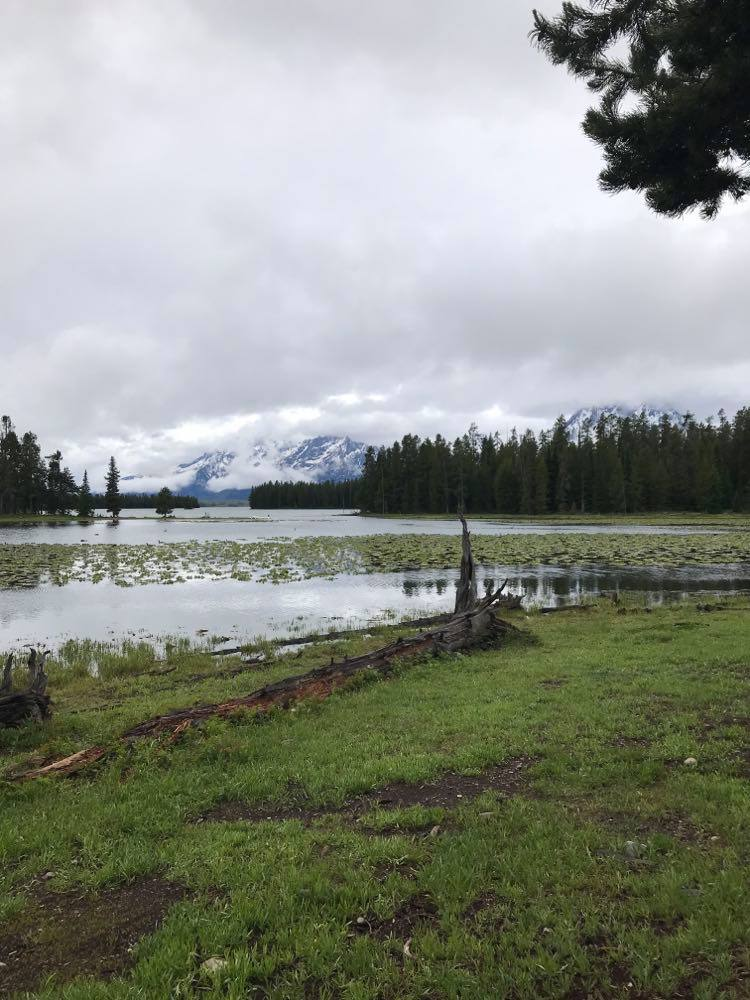
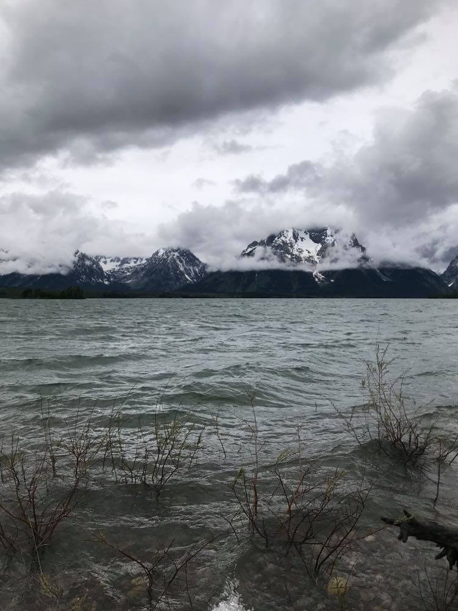
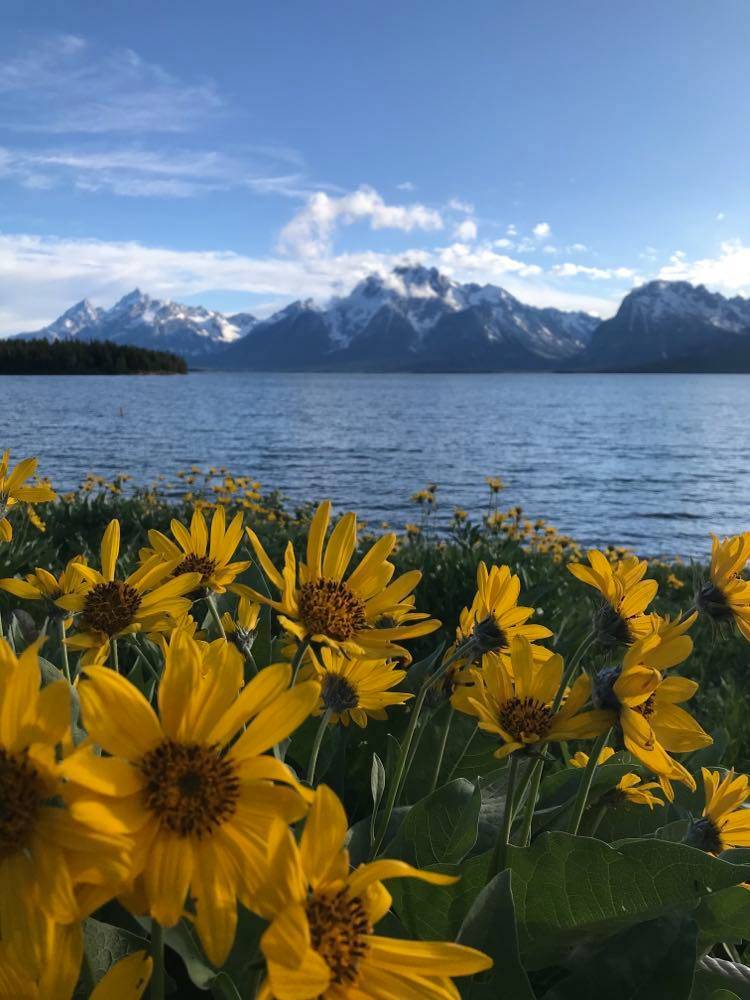

My Blog
At this point I know I have no service and so I don't know when this will be read or if I still even be alive when its read but nevertheless I will continue to jot down my adventures.
So before I even begin to talk about today I think that my bathroom experience last night is worth mentioning. The signs on the bathroom say 1 person or 1 family unit at a time and while I don't hold much stock in this I'm really not sure how other people feel and so tried to respect it. However, after ten minutes of waiting I entered the bathroom to find the family inside was completely cleaning their three year old, taking of their makeup, and shaving their legs. I spent my five minutes brushing my teeth and using the restroom and they were still at it. It should be noted that the little girl was exceedingly cute when she started singing "Girls go to Mars to get candy bars, Boys go to Jupiter to get stupider." Anyways thought that was worth mentioning and also as a PSA please don't shave our legs while camping and when their is a long line of people waiting for the bathroom.
This morning it was pouring rain and so I was very glad to be in my Haunta virus infected tent cabin. The rain was super soothing but also not very motivating. Between that and my sore legs I didn't get out of bed until 9:30. Alana had managed to put her hiking boots in the one place that rain dripped down onto which was unfortunate although maybe it helped her shoes smell better. It's worth mentioning that at this point in time our entire car smells like stinky sock. As far as air freshioners go it isn't the best. When I finally did stagger out of bed and get myself ready I ate a hurried breakfast and we poured over a map to choose a shorter easier hike. We decided on hermitage point which didn't look that long and went through the woods which would give us protection from the rain. We ran down to the visitor center to find a post card for Alana but they were all out--at a visitor center that just opened I know. Anyways I think we spent more time trying to get to the Visitor center than we actually spent in it because Alana missed the turn and we drove through the entire very large parking lot before pulling a few illegal turns and getting back. We nearly missed it again if Alana hadn't put the vehicle into reverse.
The Hermitage loop was an experience right from the get go. First what we assumed was a 2-3 mile hike turned out to be 9.5 miles. Woops. We did half our distance from yesterday which is progress. Unfortunately I didn't happen to have any water and so my solution was to take my filter and call it good. I think this was a pretty solid plan considering we were hiking along a lake. My body felt surprisingly okay and Alana and I just walked in silence which was nice but probably not the best plan for bear country. I think we were both still recovering from our jaunt yesterday. The nice part about this trail is that there were a lot less people and perhaps more importantly it was flat. We got scattered views of the Tetons but they were socked in with clouds. I was not too unhappy about the clouds considering my face was a little fried. Who knew that elevation, full sun, and snow could cook your face. (Okay I really should have known that was a possibility.) 1.5 miles in we came to Heron Pond which didn't have any herons but quite a few geese and several pelicans. Perhaps this pond should have been named pelican pond. It'd be much catchier. We continued our hike and the trail led us through several miles of enclosed forests. There was a lot of bear sign on the trail and after seeing the Bear and cubs yesterday I at least was fairly jumpy.
Finally, we reached open meadow and were rewarded with a view of the lake and the lower half of the Tetons. The meadow was filled with Balsam root and sage brush and was pretty stunning. It was also really windy. I'd now hiked 3.5 miles without drinking any water and was considering filtering but thought that maybe I could do it at the point. When we finally reached the point however, the wind made it an impossibility to fill my water and so I resigned myself to a slow death by dehydration. It made the possibility of a bear attack seem somehow less frightening. We were going to complete the loop but about a quarter of a mile beyond the point after several piles of bear skat we found a half digested unidentifiable thing. Was it a rodent? Was it part of deer? Was it an alien? I honestly could not tell you. We both took one look at that, thought about how we hadn't seen anyone else in miles and promptly turned around to go back the way we came. Not to far back we ran into a solo hiker going the other direction-we didn't mention anything to him and I felt slightly guilty that he now probably thought the trail was okay cause we'd come from that direction. I feel like we hiked very fast through this area because we were both more than a little freaked out. We ran into another solo hiker this one with headphones in. Really? Really? Who's like lets go for a hike in bear country by myself and I should wear headphones so I can't hear anything!
I found an area where the water was sheltered and so the breakers weren't quite so ferocious and filtered my water while Alana dumped the forest of pine needles that had collected out of her boot. Not to far beyond that point we heard someone coming up behind us-it was one of the solo hikers. He told us that we were crazy for going the other way. We replied that we hadn't we'd turned around after seeing the half-digested thing. He said he had too. At least we didn't send too guys to their deaths. The other solo hiker we didn't see. So either he made it or he'll never be heard from again. He's probably fine. The mom and cubs were further south. It was at this point in the hike when both Alana and I realized that what we were doing out bodies probably weren't enjoying (I'm sorry feet for mistreating you so) The hike itself though was well worth it. Back at Heron (Pelican) Pond we took a different path that would put us back to the parking lot but went by Swan Lake. There were infact Swan's in Swan lake but it wasn't really much of a lake more of a pond/river thing. I guess that Swan Pond-River-Thing doesn't have much of a ring to it. Maybe it'll catch on. Right near the end of the hike I had a slight hear attack when something came crashing through woods. Thankfully it was only a deer but I couldn't help thinking why was it in such a hurry. Anyways that adreniline rush gave us both enough to finish the hike. The last 200 feet were down a hill and in order to preserve our aged knees and fragile feet we made a snake trail down the hill. We probably looked ridiculous but hey it felt a lot better.
When we reached our car we ran into the same solo hiker from before that had turned around. He'd picked up a friend somewhere along the hike and they talked to us about seeing a black bear. While that was probably cool I can't say I was heart broken to not have run into a bear. We drove over to the General Store because someone had told us that there were indeed postcard there. While Alana looked for one I picked out a sticker for my computer. There were about 100 to choose from which honestly instead of the variety being fun to choose from made decision making exceedingly difficult. We hobbled back to the car and drove over to the campground to see about picnicking and snooping to see if it was where we wanted to stay. The guard gate however, denied us the right to picnic in the campground but said we could drive around the loop. This is not what hangry Claire and Alana wanted to hear but we did as we were told and looked on the map for a place to picnic. The guy had suggested something but I misheard the instructions and we ended up in the employee's only campground. Awkward... We went to a place I'd seen on the map to find that what they defined as a picnic area was a turn off in the road with a trash can and two picnic tables. We were desperate enough that we used it. I have never before used squeeze out jelly but I honestly think its the move it was pretty sweet...in multiple ways. The top off to our picnic is that there was a crow that just sat there about 5 feet from our table and staired at us. When I walked and Alana drove to the garbage (we weren't in great shape ok) it followed us and when I got in the car I think it wanted too to.
After some brief discussion we settled on coming back to the campground and asked for a site near the lake but also sheltered. I think we got the best spot in the 350 person campground. It's about 100 yards from the lake, 50 feet from the bathroom, and someone had payed it forward so it was free. We set up or more accurately Alana set up the tent because it confused me and I was more than a little brain dead. Alana and I then meandered down to the shore front and sat in the sun which had decided to come out. It wasn't long before we were stretched out on the pebbles with our already burnt faces in the sun. It was amazing. It was also the most comfortable thing I have ever layed on. After about an hour the sun went away and we hiked up from the beach. I went too use the restroom but ended up just sitting in there because I was too exhausted to move when i came back Alana went in too wash her face. I went and sat in her car but than realized that it would look really weird if she came out and I was just sitting in her car. So I tried to start a fire...and failed. I swear they must put flame retardant on the firewood or something. I instead settled for making my hot choclate sludge and 800 calorie dinner. I know we had lunch literally 2 hours before but I was hungry again. When Alana came out I mentioned sitting in the car and she'd said she'd done the exact same thing and had the exact same thoughts about it being weird. Great minds thing alike or something.
After dinner we walked down to the lake and talked on the shore front. It was nice to be relaxed but I felt like I'd been lazy all day. I had to keep reminding myself that I'd hiked nearly 10 miles that day and my body probably wouldn't take much more. When we finally came up I went to clean up in the bathroom. When I took off my socks I was faced with the fact that my blisters really let themselves go or had children. I really haven't decided what happened yet. Anyways I hadn't realized how bad they were and they are getting popped tomorrow. My big toes will be half the size afterwards. Washing dinner dishes was fun as the utility sink just looked like a giant toilet. There were definitely some jokes made after my hot choclate mugs were made. For those of you who do manage to keep your mind out of the gutter don't think about it. We walked down to the lake one more time because the view of the Tetons is just that incredible before crawling into our tent. When packing my mom had asked if I wanted her sleeping pad but I was like "No, it's crinkly and I'd hate to do that to Alana" Guess what sleeping pad Alana has. Oh well I'm doomed to hear the sound of crackling chip bags all night but I'll survive. We've chosen a 3 yes a 3 mile hike for tomorrow before we head into Yellowstone. Hopefully my feet will continue to take what at this point I expect to turn into a 10 mile hike. We are also planning on getting up for the sunrise so I should really get to bed. Anyways today was pretty sweet and I don't feel as completely dead as I did last night so that's pretty cool.
Peace out
-Claire